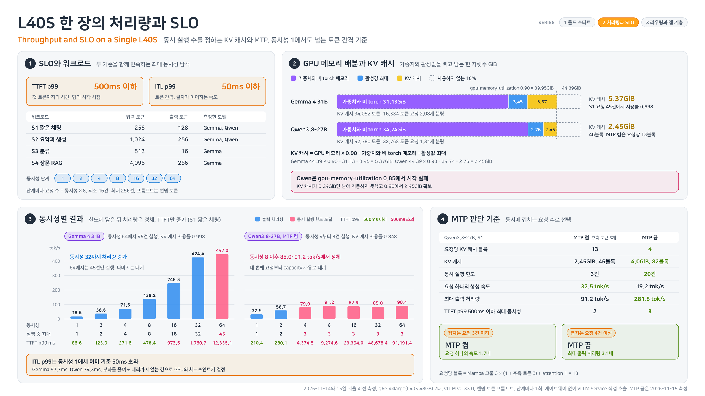
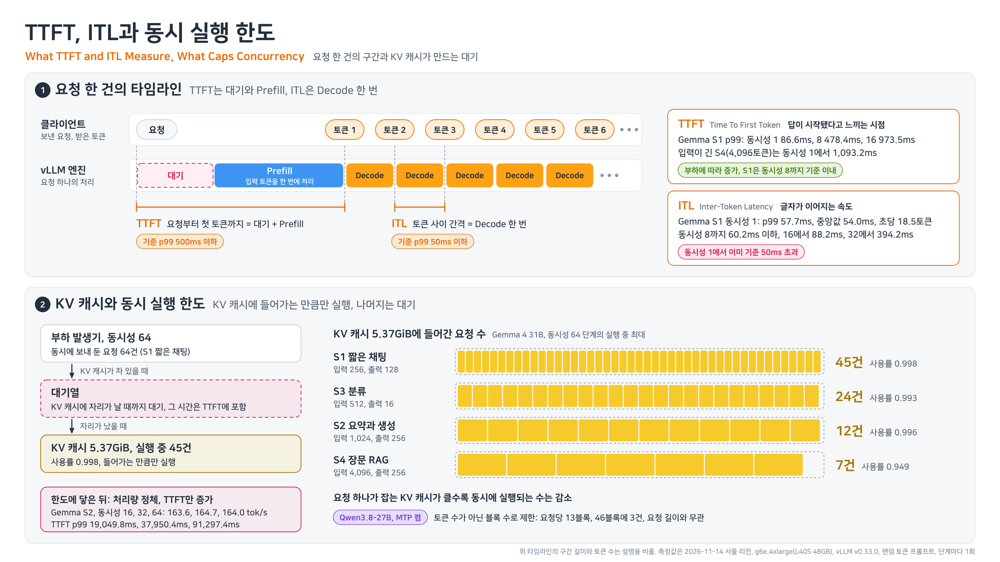
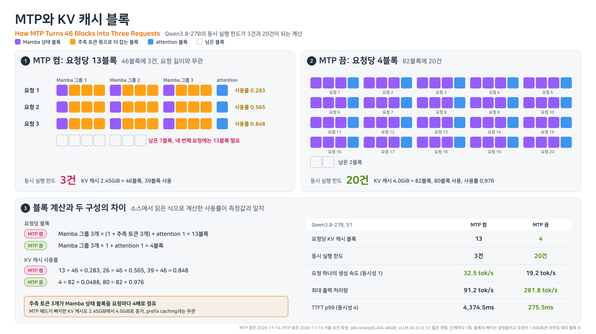
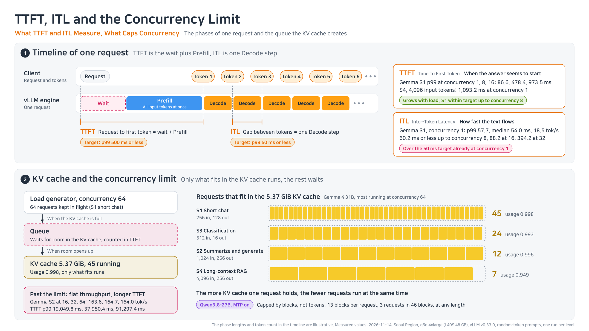
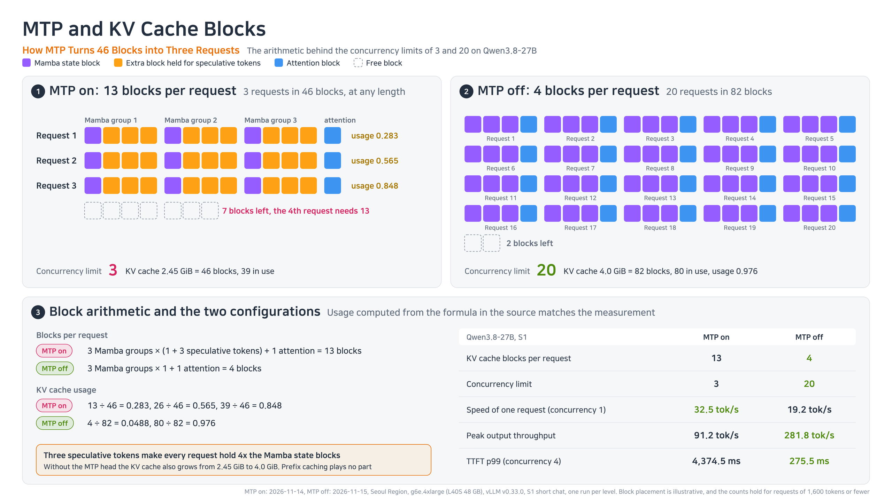

Amazon EKS에서 vLLM으로 두 모델 서빙하기 2부: L40S 한 장의 처리량과 SLOServing two models with vLLM on Amazon EKS, Part 2: Throughput and SLO on a single L40S
GPU 한 장에 모델 하나를 올린 vLLM 파드는 요청을 동시에 몇 건까지 실행하고 그 한도는 무엇이 정할까요? Amazon EKS의 L40S(g6e.4xlarge)에서 재 보니 Gemma 4 31B는 KV 캐시 5.37GiB에 요청이 들어가는 만큼 실행해 짧은 채팅은 45건, 장문 RAG는 7건이었습니다. Qwen3.8-27B는 MTP 설정 때문에 3건에서 멈췄고 MTP를 끄면 20건이 됐습니다. 토큰 간격(ITL) p99는 동시성 1에서도 기준 50ms를 넘어 부하를 줄여서는 해결되지 않았습니다.How many requests does a vLLM pod with one model on one GPU run at the same time, and what sets that limit? On an L40S (g6e.4xlarge) in Amazon EKS, Gemma 4 31B ran as many requests as fit in its 5.37 GiB KV cache: 45 for short chat and 7 for long-context RAG. Qwen3.8-27B stopped at 3 because of its MTP setting and reached 20 with MTP off. The p99 gap between tokens (ITL) was over the 50 ms target even at concurrency 1, so lowering the load did not fix it.
- KV 캐시: 48GB GPU에 30GiB대 체크포인트를 올리면 KV 캐시는 Gemma 4 31B에 5.37GiB, Qwen3.8-27B에 2.45GiB가 남습니다.KV cache: with a checkpoint of 30-odd GiB on a 48 GB GPU, 5.37 GiB is left for the KV cache of Gemma 4 31B and 2.45 GiB for Qwen3.8-27B.
- Gemma 4 31B: 동시 실행 수는 요청 길이에 따라 S1 45건, S3 24건, S2 12건, S4 7건이었고 그때 KV 캐시 사용률은 0.949에서 0.998이었습니다.Gemma 4 31B: the number of requests running at once depended on request length (45 for S1, 24 for S3, 12 for S2, 7 for S4), with KV cache usage between 0.949 and 0.998.
- Qwen3.8-27B: MTP의 추측 토큰 3개가 요청당 블록을 4에서 13으로 늘려 46블록에 3건만 들어갑니다. prefix caching을 꺼도 같았습니다.Qwen3.8-27B: the 3 speculative tokens of MTP raise the blocks per request from 4 to 13, so only 3 requests fit in 46 blocks. Turning prefix caching off changed nothing.
- MTP 켬과 끔: MTP를 끄면 한도가 20건, 최대 출력 처리량이 91.2에서 281.8 tok/s가 되고 요청 하나의 속도는 32.5에서 19.2 tok/s로 줄어듭니다.MTP on and off: with MTP off the limit is 20, peak output throughput goes from 91.2 to 281.8 tok/s, and the speed of one request falls from 32.5 to 19.2 tok/s.
- SLO: TTFT p99 500ms는 Gemma의 S1에서 동시성 8까지 만족했습니다. ITL p99는 동시성 1에서도 Gemma 57.7ms, Qwen 74.3ms로 기준 50ms를 넘었습니다.SLO: Gemma met the TTFT p99 target of 500 ms up to concurrency 8 on S1. ITL p99 was over the 50 ms target even at concurrency 1, at 57.7 ms for Gemma and 74.3 ms for Qwen.
동시 3건에서 멈춘 엔진과 틀린 첫 가설
Qwen3.8-27B를 올린 vLLM 파드는 부하를 올려도 요청을 동시에 3건만 실행했습니다. 기동 로그에 적힌 KV 캐시 크기는 42,780토큰인데 384토큰짜리 요청 세 건이 들어가자 네 번째 요청부터 대기했습니다. 처음에는 prefix caching을 원인으로 의심했고 이 가설은 틀렸습니다. prefix caching을 꺼도 한도는 3건 그대로였고 원인은 MTP(Multi-Token Prediction) 설정이었습니다.
이 글은 Amazon Elastic Kubernetes Service(Amazon EKS)에서 세 가지 질문을 측정으로 확인한 기록입니다. GPU 한 장에 모델 하나를 올린 vLLM 파드는 요청을 동시에 몇 건까지 실행하는지, 그 한도는 무엇이 정하는지, 응답 속도가 목표에 못 미칠 때 부하를 줄이면 해결되는지입니다. 환경은 NVIDIA L40S(g6e.4xlarge) 두 대에 Gemma 4 31B와 Qwen3.8-27B를 하나씩 올린 구성입니다.
이 글은 "Amazon EKS에서 vLLM으로 두 모델 서빙하기" 시리즈의 2부입니다. 1부에서는 같은 환경의 콜드 스타트를 노드 프로비저닝, 이미지 pull, 가중치 로드, 엔진 초기화 네 구간으로 나누고 구간마다 다른 방법으로 줄였습니다. Gemma 4 31B 기준으로 파드 생성부터 Ready까지 기준 구성은 394초, 최적화 구성은 260초가 걸렸습니다. 노드가 이미 떠 있는 웜 재시작은 214초에서 86초가 됐습니다. 2부는 그렇게 Ready가 된 파드가 요청을 얼마나 많이, 얼마나 빠르게 처리하는지를 다룹니다.
본문의 값은 모두 서울 리전(ap-northeast-2)의 Amazon EKS 1.37, Karpenter 1.15, vLLM v0.33.0 환경에서 2026년 11월 14일과 15일에 측정했습니다. 시나리오마다 한 번씩 쟀습니다. 부하는 게이트웨이를 거치지 않고 vLLM Service에 직접 보냈습니다. 이 글은 Amazon EKS에서 GPU 워크로드를 운영하는 플랫폼 엔지니어와 ML 엔지니어를 대상으로 하며 Kubernetes와 LLM 서빙의 기본 개념을 알고 있다면 무리 없이 읽을 수 있습니다.
그림 1에 측정 기준, GPU 메모리 배분, 동시성별 결과, MTP 판단 기준을 이 글의 순서대로 한 장으로 모았습니다. 숫자마다 어떤 측정에서 나왔는지는 이어지는 본문에서 차례로 설명합니다.

01
두 모델의 서빙 구성과 SLO
두 모델의 서빙 구성
GPU 노드는 g6e.4xlarge 두 대이고 모델마다 한 대를 사용합니다. g6e.4xlarge에는 GPU 메모리 48GB인 L40S가 한 장 있습니다. 이 환경에서 Gemma 4 31B는 상담과 요약 같은 업무를, Qwen3.8-27B는 코딩 같은 업무를 맡습니다. 표 1은 처리량에 영향을 주는 vLLM 설정만 추린 것이고 배포 방법과 나머지 플래그는 1부에서 다뤘습니다.
| 항목 | Gemma 4 31B | Qwen3.8-27B |
|---|---|---|
| 체크포인트 | RedHatAI/gemma-4-31B-it-FP8-dynamic | AzatAI/Qwen3.8-27B-FP8-dynamic |
--max-model-len | 16384 | 32768 |
--gpu-memory-utilization | 0.90 | 0.90 |
--kv-cache-dtype | fp8 | fp8 |
--enable-prefix-caching | 켬 | 켬 |
--speculative-config | 사용하지 않음 | MTP, 추측 토큰 3개 |
--max-num-seqs | 지정하지 않음 | 32 |
--scheduling-policy | priority | priority |
표 1. 두 모델의 vLLM 서빙 설정 가운데 처리량과 관련된 항목. 두 모델 모두 vllm/vllm-openai:v0.33.0 이미지를 사용합니다
두 모델의 차이는 두 가지입니다. 하나는 KV 캐시의 구조입니다. Qwen3.8-27B는 vLLM이 하이브리드 모델로 다루는 아키텍처여서 KV 캐시에 attention 블록과 Mamba 상태 블록을 함께 둡니다. 다른 하나는 MTP이고 Qwen에만 켰습니다. MTP는 모델이 가진 예측 헤드로 다음 토큰 여러 개를 미리 추측하고 본 모델이 한 번에 검증하는 speculative decoding 방식입니다. 이 두 가지가 뒤에서 볼 Qwen의 동시 실행 한도를 만듭니다.
SLO와 워크로드 네 가지
이 환경의 SLO는 두 가지입니다. 첫 토큰까지의 시간(TTFT) p99가 500ms 이하이고 스트리밍 Chunk(한 번에 전송되는 응답 단위) 사이의 간격(ITL) p99가 50ms 이하여야 합니다. TTFT는 사용자가 답이 시작됐다고 느끼는 시점을, ITL은 글자가 이어지는 속도를 정합니다. 두 기준을 함께 만족하는 가장 큰 동시성과 그때의 출력 처리량을 "SLO 하 처리량"으로 정의했습니다.
그림 2는 두 지표가 요청 한 건의 어느 구간을 재는지를 보여 줍니다. 엔진은 입력 토큰 전체를 한 번에 처리하는 Prefill을 거쳐 첫 토큰을 내고 그 뒤로는 토큰을 하나씩 만드는 Decode를 반복합니다. 그래서 TTFT에는 대기와 Prefill이, ITL에는 Decode 한 번이 들어갑니다. 그림의 아래쪽에는 뒤에서 볼 동시 실행 한도를 미리 요약했고 측정값은 표 5와 표 6에서 다시 다룹니다.

부하는 vLLM의 벤치마크(vllm bench serve)가 만드는 랜덤 토큰 프롬프트입니다. 입력과 출력 길이가 다른 워크로드 네 가지를 동시성 일곱 단계(1, 2, 4, 8, 16, 32, 64)로 보냈습니다. 동시성은 부하 발생기가 동시에 보내 두는 요청 수(--max-concurrency)입니다. 단계마다 요청 수는 동시성의 8배이고 16건보다 적거나 256건보다 많지 않게 맞췄습니다.
| 워크로드 | 입력 토큰 | 출력 토큰 | 측정한 모델 |
|---|---|---|---|
| S1 짧은 채팅 | 256 | 128 | Gemma, Qwen |
| S2 요약과 생성 | 1,024 | 256 | Gemma, Qwen |
| S3 분류 | 512 | 16 | Gemma |
| S4 장문 RAG | 4,096 | 256 | Gemma |
표 2. 워크로드 네 가지. 토큰 수는 요청 하나의 값이고 프롬프트는 랜덤 토큰입니다
단계마다 표본이 적다는 점은 미리 밝혀 둡니다. 동시성 1과 2는 16건, 4는 32건이어서 p99가 한두 건의 값에 좌우됩니다. 실패한 요청은 모든 단계에서 없었습니다.
02
측정 전용 노드의 Job과 5초 주기 지표
측정 전용 NodePool과 Job
부하 발생기는 클러스터 안에서 Kubernetes Job으로 실행했습니다. 게이트웨이나 시스템 파드와 같은 노드에서 부하를 만들면 CPU를 다투게 되므로 Karpenter NodePool을 하나 더 만들어 측정 Job만 받게 했습니다. 아래는 그 NodePool의 일부입니다.
apiVersion: karpenter.sh/v1
kind: NodePool
metadata:
name: bench
spec:
template:
spec:
requirements:
- key: karpenter.k8s.aws/instance-category
operator: In
values: ["c", "m"]
- key: karpenter.k8s.aws/instance-cpu
operator: In
values: ["8"]
taints:
- key: ow-on-gpu/bench
value: "true"
effect: NoSchedule
limits:
cpu: "16"
disruption:
consolidationPolicy: WhenEmpty
consolidateAfter: 10mtaint로 다른 파드를 막고 limits의 CPU 16으로 8 vCPU 노드를 두 대까지 허용합니다. 두 모델의 측정을 함께 실행해도 모델마다 측정 노드가 달라 서로 영향을 주지 않습니다. WhenEmpty와 consolidateAfter: 10m은 측정 Job의 파드가 없어지고 10분이 지나면 노드를 회수합니다. 이번 측정에서 Karpenter가 고른 인스턴스는 c7i-flex.2xlarge였습니다.
측정 Job은 서빙과 같은 vLLM 이미지를 사용합니다. 요청은 게이트웨이를 거치지 않고 vLLM의 ClusterIP Service(8000 포트)로 직접 보냅니다. 게이트웨이와 라우팅 계층이 더하는 시간은 3부에서 따로 다룹니다. Job이 실행하는 명령은 다음 형태입니다(측정 스크립트의 일부).
np=$(( c * 8 )); (( np < 16 )) && np=16; (( np > 256 )) && np=256
python3 /bench/bench_serve.py \
--backend openai \
--base-url "$BASE_URL" \
--model "$MODEL_NAME" \
--tokenizer "$TOKENIZER_DIR" \
--dataset-name random \
--random-input-len "$ILEN" \
--random-output-len "$OLEN" \
--max-concurrency "$c" \
--num-prompts "$np" \
--percentile-metrics ttft,tpot,itl,e2el \
--metric-percentiles 50,90,99 \
--save-result \
--save-detailed \
--result-dir "$RESULTS_DIR" \
--result-filename "${s}_c${c}.json"여기에는 측정 중에 알게 된 점이 두 가지 들어 있습니다. vllm bench serve 명령은 GPU가 없는 노드에서 "Failed to infer device type" 오류로 시작하지 못했습니다. 그래서 같은 벤치마크 모듈(vllm.benchmarks.serve)을 직접 부르는 짧은 스크립트(bench_serve.py)로 바꿨고 인자와 측정 코드는 같습니다. 랜덤 프롬프트를 만드는 토크나이저는 Hugging Face가 아닌 Amazon S3의 모델 버킷에서 받았습니다.
Prometheus agent와 Amazon Managed Service for Prometheus
벤치마크는 클라이언트가 본 TTFT와 ITL을 알려 주지만 그 순간 엔진이 몇 건을 실행하고 있었는지는 알려 주지 않습니다. 이 값은 vLLM의 /metrics에서 읽어야 합니다. 수집기는 Prometheus v3.16.0 하나를 agent 모드로 띄웠습니다. Prometheus 문서에 따르면 agent 모드는 쿼리, 알림, 로컬 저장을 끈 실행 모드입니다. 수집기는 지표를 remote write로 Amazon Managed Service for Prometheus 워크스페이스에 보냅니다. 저장과 조회는 워크스페이스가 맡습니다.
scrape_configs:
- job_name: vllm
scrape_interval: 5s
kubernetes_sd_configs:
- role: pod
namespaces:
names: [inference]
relabel_configs:
- source_labels: [__meta_kubernetes_pod_label_app_kubernetes_io_name]
regex: vllm-(gemma|qwen)
action: keep
- source_labels: [__meta_kubernetes_pod_label_app_kubernetes_io_name]
regex: vllm-(.+)
target_label: model
remote_write:
- url: https://aps-workspaces.ap-northeast-2.amazonaws.com/workspaces/<workspace-id>/api/v1/remote_write
sigv4:
region: ap-northeast-2위 설정은 수집기 설정의 일부입니다. 기본 수집 주기는 15초이고 측정 중의 변화를 보려고 vLLM 파드만 5초로 줄였습니다. 파드 라벨에서 model 라벨(gemma, qwen)을 만들어 모든 쿼리를 모델별로 나눕니다. remote write 요청은 SigV4로 서명하고 자격 증명은 aps:RemoteWrite 권한만 가진 IAM 역할을 EKS Pod Identity로 수집기의 ServiceAccount에 연결해 받습니다. Amazon Managed Service for Prometheus User Guide의 수집 절차는 IAM roles for service accounts를 기준으로 설명합니다. 이 환경에서는 EKS Pod Identity로 연결한 역할로도 remote write가 되는 것을 확인했습니다.
| 보려는 것 | 원본 지표 |
|---|---|
| TTFT | vllm:time_to_first_token_seconds |
| ITL | vllm:inter_token_latency_seconds |
| 실행 중인 요청 수, 대기 요청 수 | vllm:num_requests_running, vllm:num_requests_waiting |
| 대기 사유 | vllm:num_requests_waiting_by_reason |
| KV 캐시 사용률 | vllm:kv_cache_usage_perc |
| 선점 횟수 | vllm:num_preemptions_total |
| MTP 수락률 | vllm:spec_decode_num_accepted_tokens_total ÷ vllm:spec_decode_num_draft_tokens_total |
표 3. 모델별로 나눠 본 지표. 이름은 vLLM v0.33.0 파드의 /metrics에서 확인했습니다
뒤의 표에 나오는 "실행 중 최대"와 "KV 캐시 사용률 최대"는 이 지표에서 계산했습니다. 측정 로그에서 단계별 시작 시각을 읽어 구간을 나누고 구간마다 아래와 같은 쿼리를 워크스페이스에 보냈습니다. 괄호 안의 98초와 82초는 해당 단계가 실행된 시간입니다.
max_over_time(vllm:num_requests_running{model="qwen"}[98s])
max_over_time(vllm:kv_cache_usage_perc{model="qwen"}[98s])
increase(vllm:num_preemptions_total{model="gemma"}[82s])5초마다 읽은 값의 최댓값이므로 그 사이에 잠깐 지나간 변화는 잡히지 않습니다.
03
가중치를 빼고 남는 KV 캐시 5.37GiB와 2.45GiB
결과를 보기 전에 GPU 메모리가 어떻게 나뉘는지부터 확인합니다. vLLM은 --gpu-memory-utilization으로 정한 비율만큼의 GPU 메모리를 사용하고 가중치와 실행에 필요한 메모리를 뺀 나머지를 기동할 때 KV 캐시로 미리 잡습니다. 표 4는 두 파드의 기동 로그에서 옮긴 값입니다.
| 항목 | Gemma 4 31B | Qwen3.8-27B |
|---|---|---|
| GPU 메모리 | 44.39GiB | 44.39GiB |
| 0.90을 곱한 목표 | 39.95GiB | 39.95GiB |
| 가중치와 비 torch 메모리 | 31.13GiB | 34.74GiB |
| (그중 가중치) | 30.63GiB | 34.39GiB |
| 활성값 최대 | 3.45GiB | 2.76GiB |
| KV 캐시 | 5.37GiB | 2.45GiB |
| KV 캐시 크기 | 34,052 토큰 | 42,780 토큰 |
| 최대 길이 요청으로 환산 | 16,384 토큰 요청 2.08개 | 32,768 토큰 요청 1.31개 |
표 4. 기동 로그 기준 GPU 메모리 배분. Qwen의 KV 캐시는 첫 기동 로그에 2.46GiB, 그 뒤의 기동 로그에 2.45GiB로 기록됐습니다. CUDA graph 메모리(Gemma 0.35GiB, Qwen 0.58GiB)는 표에 넣지 않았습니다
로그의 값은 다음 식과 맞습니다.
KV 캐시 메모리 = GPU 메모리 × gpu-memory-utilization - 가중치와 비 torch 메모리 - 활성값 최대
Gemma: 44.39 × 0.90 - 31.13 - 3.45 = 5.37 GiB
Qwen: 44.39 × 0.90 - 34.74 - 2.76 = 2.45 GiB48GB GPU에 30GiB대 체크포인트를 올리면 KV 캐시로 남는 메모리는 한 자릿수 GiB입니다. Qwen은 가중치가 Gemma보다 3.76GiB 커서 KV 캐시가 절반이 안 됩니다. Qwen은 --gpu-memory-utilization=0.85에서는 KV 캐시가 0.24GiB만 남아 시작하지 못했고 0.90으로 올려서야 기동했습니다.
기동 로그는 KV 캐시 크기를 토큰 수로 알려 주고 최대 길이 요청이 몇 개 들어가는지도 함께 적습니다. 실제 요청은 최대 길이보다 짧으므로 동시에 실행되는 수는 요청 길이에 따라 달라집니다. Gemma는 이 예상대로 움직였고 Qwen은 토큰 수로는 설명되지 않는 한도를 보였습니다.
04
Gemma 4 31B는 KV 캐시에 들어가는 만큼 실행
워크로드별 처리량과 지연
S1의 결과를 동시성별로 먼저 봅니다. TTFT와 ITL은 클라이언트가 잰 값이고 실행 중 최대와 KV 캐시 사용률은 같은 구간의 엔진 지표입니다.
| 동시성 | 출력 처리량 (tok/s) | TTFT p99 (ms) | ITL p99 (ms) | 실행 중 최대 | KV 캐시 사용률 최대 |
|---|---|---|---|---|---|
| 1 | 18.5 | 86.6 | 57.7 | 1 | 0.030 |
| 2 | 36.6 | 123.0 | 58.1 | 2 | 0.060 |
| 4 | 71.5 | 271.6 | 59.0 | 4 | 0.120 |
| 8 | 138.2 | 478.4 | 60.2 | 8 | 0.240 |
| 16 | 248.3 | 973.5 | 88.2 | 16 | 0.480 |
| 32 | 424.4 | 1,760.7 | 394.2 | 32 | 0.960 |
| 64 | 447.0 | 12,335.1 | 436.9 | 45 | 0.998 |
표 5. Gemma 4 31B, S1 짧은 채팅(입력 256, 출력 128)의 동시성별 결과. 2026년 11월 14일, 단계마다 한 번 측정
처리량은 동시성 32(424.4 tok/s)까지 계속 늘고 64에서는 447.0 tok/s로 거의 늘지 않습니다. 이때 엔진이 실제로 실행한 요청은 45건이었고 나머지는 대기했습니다. 나머지 워크로드는 요약해서 봅니다.
| 워크로드 | 동시성 1의 TTFT p99 (ms) | 동시성 1의 ITL p99 (ms) | TTFT p99 500ms 이하인 최대 동시성 | 최대 출력 처리량 (tok/s) | 실행 중 최대 | KV 캐시 사용률 최대 |
|---|---|---|---|---|---|---|
| S1 짧은 채팅 | 86.6 | 57.7 | 8 | 447.0 | 45 | 0.998 |
| S2 요약과 생성 | 266.7 | 58.3 | 1 | 164.7 | 12 | 0.996 |
| S3 분류 | 132.9 | 57.6 | 4 | 114.7 | 24 | 0.993 |
| S4 장문 RAG | 1,093.2 | 58.6 | 없음 | 81.8 | 7 | 0.949 |
표 6. Gemma 4 31B의 워크로드별 요약. 실행 중 최대와 KV 캐시 사용률 최대는 동시성 64 단계의 값입니다
TTFT와 ITL을 함께 만족하는 동시성은 네 워크로드 어디에도 없었습니다. 이유는 두 기준에서 서로 다릅니다.
부하와 무관한 ITL 54ms
ITL p99는 네 워크로드 모두 동시성 1에서 이미 57.6ms와 58.6ms 사이로 기준 50ms를 넘습니다. 요청이 하나뿐이어서 대기도 경합도 없는 상태의 값입니다. S1 동시성 1에서 ITL 중앙값은 54.0ms, 토큰당 시간(TPOT) 중앙값은 53.9ms였습니다. Gemma는 Chunk 하나에 토큰 하나를 담아 보내므로 두 값이 거의 같고 초당 18.5토큰이라는 생성 속도와도 맞습니다.
토큰 하나를 만드는 데 걸리는 54ms는 L40S에서 이 FP8 체크포인트가 내는 속도입니다. 동시성을 1까지 줄여도 이 값 아래로는 내려가지 않았습니다. ITL p99 50ms라는 기준을 지키려면 GPU나 체크포인트를 바꿔야 하고 이 구성을 그대로 사용하려면 기준을 다시 정해야 합니다.
TTFT는 부하에 따라 움직입니다. TTFT 기준만 보면 S1은 동시성 8(p99 478.4ms), S3는 4, S2는 1까지 만족합니다. S4는 입력이 4,096토큰이어서 동시성 1에서도 TTFT p99가 1,093.2ms였고 어느 단계에서도 만족하지 못합니다.
KV 캐시가 정하는 동시 실행 수
표 6의 실행 중 최대는 워크로드마다 다릅니다. 요청이 짧은 S1은 45건, S3는 24건이고 긴 S2는 12건, S4는 7건입니다. 네 경우 모두 그 시점의 KV 캐시 사용률이 0.949에서 0.998이었고 그 뒤에 들어온 요청은 대기했습니다. Gemma의 동시 실행 수는 KV 캐시 5.37GiB에 요청이 몇 개 들어가느냐로 정해집니다.
한도에 닿은 뒤에는 동시성을 올려도 처리량이 늘지 않고 TTFT만 길어집니다. S2는 동시성 16, 32, 64에서 처리량이 163.6, 164.7, 164.0 tok/s로 거의 같고 TTFT p99는 19,049.8ms, 37,950.4ms, 91,297.4ms로 늘었습니다. S1의 동시성 64에서는 KV 캐시가 모자라 실행 중이던 요청을 밀어내는 선점이 81회 일어났습니다.
05
Qwen3.8-27B의 동시 3건 한도를 추적한 과정
증상
Qwen은 S1과 S2를 같은 방법으로 쟀습니다.
| 동시성 | S1 출력 처리량 (tok/s) | S1 TTFT p99 (ms) | S1 ITL p99 (ms) | S1 실행 중 최대 | S2 출력 처리량 (tok/s) | S2 TTFT p99 (ms) | S2 ITL p99 (ms) | S2 실행 중 최대 |
|---|---|---|---|---|---|---|---|---|
| 1 | 32.5 | 210.4 | 74.3 | 1 | 33.6 | 366.3 | 74.5 | 1 |
| 2 | 58.7 | 280.1 | 109.3 | 2 | 67.1 | 570.3 | 74.5 | 2 |
| 4 | 79.9 | 4,374.5 | 110.3 | 3 | 77.8 | 6,495.5 | 267.9 | 3 |
| 8 | 91.2 | 9,274.6 | 111.6 | 3 | 97.6 | 17,092.3 | 259.7 | 3 |
| 16 | 87.9 | 23,394.0 | 111.7 | 3 | 99.2 | 40,555.9 | 265.3 | 3 |
| 32 | 85.0 | 48,678.4 | 110.9 | 3 | 95.2 | 93,411.1 | 259.3 | 3 |
| 64 | 90.4 | 91,191.4 | 111.8 | 3 | 96.5 | 171,818.7 | 262.7 | 3 |
표 7. Qwen3.8-27B(MTP 켬)의 S1과 S2 동시성별 결과. 2026년 11월 14일, 단계마다 한 번 측정
요청 하나는 Gemma보다 빠릅니다. S1 동시성 1에서 초당 32.5토큰입니다. 그런데 동시성 4부터 실행 중 최대가 3에서 멈춥니다. 처리량은 동시성 8 이후 S1에서 85.0에서 91.2 tok/s, S2에서 95.2에서 99.2 tok/s에 머물고 TTFT p99는 동시성 4에서 이미 4,374.5ms입니다.
이 한도는 요청 길이와 무관했습니다. 요청 하나가 잡은 KV 캐시는 S1(입력과 출력을 더해 384토큰)과 S2(1,280토큰)에서 똑같이 28.3%였습니다. 3건에서 84.8%가 되고 네 번째 요청부터는 capacity 사유로 대기했습니다. 기동 로그의 KV 캐시 크기는 42,780 토큰인데 384토큰짜리 요청 세 건에서 막힌 셈입니다. Gemma처럼 토큰 수에 비례해 차는 구조라면 나올 수 없는 값입니다.
첫 번째 가설과 prefix caching을 끈 측정
처음 의심한 것은 prefix caching입니다. Qwen의 기동 로그에는 prefix caching이 켜져 있으면 Mamba 캐시를 align 모드로 둔다는 줄과 attention 블록 크기를 1,600토큰으로 맞춘다는 줄이 있습니다.
Mamba cache mode is set to 'align' for Qwen3_5ForConditionalGeneration by default when prefix caching is enabled
Setting attention block size to 1600 tokens to ensure that attention page size is >= mamba page size.블록 하나가 1,600토큰이면 짧은 요청도 블록을 통째로 잡습니다. 그래서 align 모드가 동시 실행 수를 묶는 원인이라고 추정했습니다. 이 추정이 맞다면 prefix caching을 껐을 때 동시 실행 수가 늘어야 합니다.
확인하려고 서빙 구성에서 플래그 하나만 바꾼 Kustomize 오버레이를 만들었습니다. v0.33.0에서는 --enable-prefix-caching을 지우기만 하면 기본값이 켜짐이어서 --disable-prefix-caching으로 명시했습니다. 아래는 오버레이의 일부입니다.
patches:
- target:
kind: Deployment
name: vllm-qwen
patch: |-
- op: test
path: /spec/template/spec/containers/0/args/8
value: --enable-prefix-caching
- op: replace
path: /spec/template/spec/containers/0/args/8
value: --disable-prefix-caching이 구성으로 Qwen을 다시 띄워 S1을 같은 방법으로 재고 측정 뒤 원래 구성으로 되돌렸습니다.
| 동시성 | 켬: 출력 처리량 (tok/s) | 켬: TTFT p99 (ms) | 켬: 실행 중 최대 | 끔: 출력 처리량 (tok/s) | 끔: TTFT p99 (ms) | 끔: 실행 중 최대 |
|---|---|---|---|---|---|---|
| 1 | 32.5 | 210.4 | 1 | 27.0 | 253.8 | 2 |
| 2 | 58.7 | 280.1 | 2 | 58.7 | 278.1 | 3 |
| 4 | 79.9 | 4,374.5 | 3 | 85.7 | 3,621.0 | 3 |
| 8 | 91.2 | 9,274.6 | 3 | 89.4 | 9,616.9 | 3 |
| 16 | 87.9 | 23,394.0 | 3 | 82.0 | 24,495.5 | 3 |
| 32 | 85.0 | 48,678.4 | 3 | 87.1 | 47,133.6 | 3 |
| 64 | 90.4 | 91,191.4 | 3 | 85.5 | 96,130.3 | 3 |
표 8. Qwen3.8-27B, S1에서 prefix caching을 켠 구성(2026년 11월 14일)과 끈 구성(2026년 11월 15일). 각각 한 번 측정
prefix caching을 꺼도 동시에 3건만 실행했습니다. 동시성 4부터 실행 중 최대 3건, KV 캐시 사용률 0.848, 대기 사유 capacity가 켠 구성과 같았고 처리량도 82.0에서 89.4 tok/s로 같은 수준입니다. 첫 번째 가설은 기각했습니다.
기동 로그에서 달라진 것은 Mamba 그룹의 블록 크기(1,600토큰에서 32,768토큰)뿐이고 attention 블록을 1,600토큰으로 맞춘다는 줄은 두 구성에 모두 있었습니다. 끈 구성의 동시성 1과 2에서는 실행 중 최대가 한 건씩 많게(2건, 3건) 잡혔는데 이유는 확인하지 않았습니다. 동시성 1의 처리량 차이(27.0과 32.5 tok/s)도 한 번씩 잰 값이라 원인을 가르지 못합니다.
소스에서 확인한 블록 계산
설정으로 가르지 못했으므로 vLLM v0.33.0의 소스에서 블록을 할당하는 코드를 읽었습니다. Qwen의 KV 캐시는 네 그룹으로 나뉩니다(기동 로그의 kv cache group sizes (1600, 1600, 1600, 1600)). 세 개가 Mamba 상태 그룹이고 하나가 attention 그룹입니다. 블록 하나의 메모리는 Mamba 상태 한 벌의 크기에 맞춰져 있습니다.
Mamba 상태 그룹은 speculative decoding을 사용하면 요청마다 추측 토큰 수만큼 블록을 더 잡습니다. 아래는 해당 코드 두 곳의 일부입니다.
# vllm/model_executor/layers/mamba/abstract.py
num_speculative_blocks=(
0
if vllm_config.cache_config.use_replayssm
else vllm_config.num_speculative_tokens
),
# vllm/v1/core/single_type_kv_cache_manager.py (MambaManager)
num_required_blocks = (
cdiv(num_tokens, self.block_size) + self.num_speculative_blocks
)같은 파일의 align이 아닌 모드 분기도 num_speculative_blocks만큼을 더합니다. prefix caching을 꺼도 결과가 같았던 이유입니다. Qwen은 MTP의 추측 토큰이 3개이므로 요청당 블록 수는 이렇게 계산됩니다.
요청당 블록 = Mamba 그룹 3개 × (1 + 추측 토큰 3개) + attention 1블록 = 13블록
KV 캐시 46블록 ÷ 13블록 = 3건 (39블록 사용, 네 번째 요청까지 받으려면 52블록)
사용률: 13 ÷ 46 = 0.283, 26 ÷ 46 = 0.565, 39 ÷ 46 = 0.848KV 캐시 2.45GiB는 46블록이고 계산한 사용률은 동시성 1, 2, 4 이상에서 잰 값 0.283, 0.565, 0.848과 소수 셋째 자리까지 같습니다. S1과 S2의 사용률이 같았던 것도 설명됩니다. 두 워크로드 모두 요청 길이가 1,600토큰 이하여서 attention 블록을 하나만 잡습니다. 그래서 두 번째 가설은 MTP입니다.
MTP를 끈 두 번째 측정
소스에서 읽은 식이 맞다면 MTP를 껐을 때 요청당 블록은 13에서 4가 되고 동시 실행 수가 늘어야 합니다. 이번에도 플래그 하나만 바꾼 오버레이로 확인했습니다. 아래는 패치의 일부입니다.
- op: test
path: /spec/template/spec/containers/0/args/10
value: '--speculative-config={"method":"mtp","num_speculative_tokens":3}'
- op: remove
path: /spec/template/spec/containers/0/args/10S1을 같은 방법으로 다시 재고 측정 뒤 원래 구성으로 되돌렸습니다.
| 동시성 | MTP 켬: 출력 처리량 (tok/s) | 켬: TTFT p99 (ms) | 켬: 실행 중 최대 | MTP 끔: 출력 처리량 (tok/s) | 끔: TTFT p99 (ms) | 끔: 실행 중 최대 |
|---|---|---|---|---|---|---|
| 1 | 32.5 | 210.4 | 1 | 19.2 | 102.5 | 1 |
| 2 | 58.7 | 280.1 | 2 | 36.6 | 217.0 | 2 |
| 4 | 79.9 | 4,374.5 | 3 | 70.9 | 275.5 | 4 |
| 8 | 91.2 | 9,274.6 | 3 | 136.8 | 486.9 | 8 |
| 16 | 87.9 | 23,394.0 | 3 | 243.7 | 1,020.4 | 16 |
| 32 | 85.0 | 48,678.4 | 3 | 281.8 | 10,000.4 | 20 |
| 64 | 90.4 | 91,191.4 | 3 | 281.8 | 27,360.8 | 20 |
표 9. Qwen3.8-27B, S1에서 MTP를 켠 구성(2026년 11월 14일)과 끈 구성(2026년 11월 15일). 각각 한 번 측정
MTP를 끄자 동시에 20건까지 실행했습니다. 요청 하나의 KV 캐시 사용률은 0.0488로, 82블록 가운데 4블록입니다. 소스에서 읽은 대로 Mamba 그룹 3개에 1블록씩과 attention 1블록입니다. 20건에서 80블록(0.976)이 차고 그 뒤로는 대기했습니다.
블록 수가 46에서 82로 늘어난 것도 한도에 영향을 줬습니다. MTP 헤드가 빠지면서 기동 로그의 가중치와 비 torch 메모리가 34.74GiB에서 33.89GiB로, 활성값 최대가 2.76GiB에서 2.07GiB로 줄었습니다. 그만큼 KV 캐시가 2.45GiB에서 4.0GiB로 늘었습니다. 요청당 블록이 13에서 4로 줄어든 것과 겹쳐 한도가 3건에서 20건이 됐습니다.
지표 vllm:cache_config_info의 num_gpu_blocks는 두 구성에서 47과 83으로 하나씩 많습니다. 사용률은 46과 82를 분모로 계산했을 때 측정값과 맞았습니다.
주차장에 비유하면 이해하기 쉽습니다. KV 캐시는 주차장이고 요청은 들어오는 차량입니다. Gemma의 주차장은 차 길이만큼만 자리를 내주므로 짧은 차일수록 많이 들어갑니다. Qwen의 주차장은 46면이고 차 한 대가 오면 13면을 한꺼번에 내줍니다. 그 가운데 9면은 MTP가 미리 내다볼 토큰 세 개 몫으로 잡아 두는 자리입니다. 세 대가 들어오면 39면이 차고 네 번째 차는 입구에서 기다립니다. MTP를 끄면 한 대가 4면만 차지하고 주차장도 82면으로 넓어져 20대가 들어갑니다. 비유가 가리는 조건이 하나 있습니다. 13면과 4면은 요청이 1,600토큰 이하일 때의 값입니다.
그림 3은 두 구성의 블록 배분을 같은 크기의 칸으로 그린 것입니다.

원인은 MTP, prefix caching은 무관
Qwen이 동시에 3건만 실행한 원인은 MTP입니다. 추측 토큰 3개가 Mamba 상태 블록을 요청마다 4배로 잡게 하고 MTP 헤드가 KV 캐시로 갈 메모리도 줄입니다. prefix caching과는 무관합니다. 측정 두 번이 가설을 하나씩 갈랐습니다. prefix caching을 끈 측정은 결과가 그대로여서 첫 가설을 기각했고 MTP를 끈 측정은 소스에서 계산한 블록 수와 측정한 사용률이 맞아 둘째 가설을 확인했습니다.
06
한 번씩 잰 값의 한계
모든 측정은 한 번씩입니다. 반복했을 때의 편차는 재지 않았고 낮은 동시성의 p99는 16건이나 32건에서 나온 값입니다. 본문의 수치는 이 환경에서 이날 관찰한 값으로 읽어야 합니다.
게이트웨이를 거친 경로의 SLO 하 처리량은 재지 않았습니다. 엔진의 한도를 보려고 vLLM Service를 직접 호출했기 때문입니다. Qwen에서 MTP를 끈 구성은 S1만 쟀고 S2는 재지 않았습니다. 추측 토큰을 1개나 2개로 줄였을 때의 동시 실행 수와 처리량도 재지 않았습니다.
Gemma의 KV 캐시 크기는 기동마다 같지 않았습니다. 본문의 처리량은 KV 캐시가 5.37GiB(34,052 토큰)인 파드에서 잰 값입니다. 같은 날 compile 캐시를 복원해 다시 띄운 Gemma 파드의 기동 로그에는 활성값 최대 1.67GiB, KV 캐시 7.15GiB(45,321 토큰)가 기록됐습니다. 이 상태에서는 처리량을 다시 재지 않았으므로 표 6의 실행 중 최대는 KV 캐시 5.37GiB일 때의 값입니다.
07
용량 계획에 적용하는 기준
MTP를 켤지 끌지
MTP를 끄면 처리량이 늘지만 요청 하나는 느려집니다. 표 10에 S1에서 두 구성을 잰 값을 나란히 놓았습니다.
| 항목 | MTP 켬 (추측 토큰 3개) | MTP 끔 |
|---|---|---|
| 요청당 KV 캐시 블록 | 13 | 4 |
| KV 캐시 | 2.45GiB, 46블록 | 4.0GiB, 82블록 |
| 동시 실행 한도 | 3건 | 20건 |
| 요청 하나의 생성 속도 (동시성 1) | 32.5 tok/s | 19.2 tok/s |
| TPOT 중앙값 (동시성 1) | 26.6ms | 51.7ms |
| 최대 출력 처리량 | 91.2 tok/s | 281.8 tok/s |
| TTFT p99 500ms 이하인 최대 동시성 | 2 | 8 |
| ITL p99 (동시성 1) | 74.3ms | 58.7ms |
표 10. Qwen3.8-27B, S1에서 MTP를 켠 구성과 끈 구성의 비교. 랜덤 토큰 프롬프트 기준이며 각각 한 번 측정
MTP는 요청 하나의 속도를 1.7배로 올리는 대신 동시 실행 수를 3으로 묶습니다. 끄면 최대 처리량이 91.2에서 281.8 tok/s로 3.1배가 되고 요청 하나는 초당 32.5토큰에서 19.2토큰이 됩니다. 처리량은 동시성 4까지는 켠 쪽이 크고(79.9와 70.9 tok/s) 8부터는 끈 쪽이 큽니다(91.2와 136.8 tok/s). 그 사이의 동시성은 재지 않았습니다.
대화형 업무라면 TTFT를 함께 봐야 합니다. 동시성 4에서 켠 구성은 네 번째 요청이 대기해 TTFT p99가 4,374.5ms이고 끈 구성은 275.5ms입니다. 그래서 판단 기준은 동시에 겹치는 요청 수입니다. 한두 명이 사용해 요청이 3건을 넘지 않는 업무라면 MTP를 켜는 쪽이, 사내 코딩 에이전트처럼 요청이 4건 이상 겹치는 업무라면 끄는 쪽이 유리합니다. vLLM 문서도 speculative decoding을 QPS가 낮거나 중간인 워크로드에서 토큰 간격을 줄이는 기능으로 설명합니다.
이 판단에는 조건이 세 가지 따릅니다. 우선 MTP의 이득은 추측이 얼마나 맞느냐에 달려 있습니다. 랜덤 토큰 프롬프트에서 위치별 수락률은 S1 동시성 1에서 0.56, 0.43, 0.36이었습니다. 한국어 대화 요청을 보낸 뒤 파드의 누적 지표에서 읽은 값은 드래프트 1,791회에 0.87, 0.76, 0.64였습니다. 실제 워크로드에서는 수락률이 달라지므로 요청 하나의 속도 차이도 표 10과 다를 수 있습니다.
다음으로 MTP를 켠 모델은 ITL로 속도를 판단하기 어렵습니다. Chunk 하나에 토큰 여러 개가 담겨 오기 때문입니다. S1 동시성 1에서 ITL 중앙값은 69.8ms인데 TPOT 중앙값은 26.6ms입니다. ITL p99 50ms 기준은 MTP를 꺼도 만족하지 못했고(58.7ms) 켠 구성의 TPOT p99도 58.2ms였습니다. Gemma와 마찬가지로 L40S에서 이 체크포인트가 내는 속도가 기준에 못 미칩니다.
마지막으로 켬과 끔 사이의 선택지는 재지 않았습니다. vLLM의 MTP 문서는 num_speculative_tokens를 1 같은 작은 값에서 시작하도록 안내합니다. 소스의 식으로는 추측 토큰이 1개일 때 요청당 7블록, 2개일 때 10블록입니다. --use-replayssm을 켜면 num_speculative_blocks가 0이 되지만 도움말이 이 옵션을 Mamba2 커널용으로 설명하고 있어 Qwen에 적용되는지는 확인하지 않았습니다.
동시 실행 한도와 SLO를 읽는 방법
동시 실행 한도는 기동 로그의 KV 캐시 토큰 수만으로는 알 수 없었습니다. 엔진 지표의 실행 중 요청 수(vllm:num_requests_running)와 KV 캐시 사용률(vllm:kv_cache_usage_perc)을 함께 보는 것을 권고합니다. Qwen에서는 요청 하나가 사용률을 0.283씩 올렸고 이 값에서 한도 3건이 나옵니다.
SLO의 두 기준은 따로 봐야 합니다. TTFT는 부하를 줄이면 나아져서 Gemma의 S1은 동시성 8까지 기준을 만족했습니다. ITL p99는 동시성 1에서도 Gemma 57.7ms, Qwen 74.3ms로 기준 50ms를 넘었습니다. 이 값은 GPU와 체크포인트가 정하므로 기준을 지키려면 둘 중 하나를 바꾸거나 기준을 다시 정해야 합니다.
한도에 닿은 엔진에서 어떤 요청을 먼저 처리할지는 또 다른 문제입니다. 배치 부하가 KV 캐시를 채운 상태에서 상담 요청을 지키는 방법은 3부에서 게이트웨이와 엔진의 우선순위로 다룹니다.
An engine that stopped at three concurrent requests, and a first hypothesis that was wrong
The vLLM pod serving Qwen3.8-27B ran only 3 requests at the same time, however much load I added. The start-up log gave the KV cache size as 42,780 tokens, yet once three requests of 384 tokens were in, the fourth had to wait. I first suspected prefix caching, and that hypothesis was wrong. With prefix caching off the limit was still 3, and the cause was the MTP (Multi-Token Prediction) setting.
This post records three questions answered by measurement on Amazon Elastic Kubernetes Service (Amazon EKS). How many requests does a vLLM pod with one model on one GPU run at the same time, what sets that limit, and does lowering the load help when responses are slower than the target? The environment is two NVIDIA L40S GPUs (g6e.4xlarge), one with Gemma 4 31B and one with Qwen3.8-27B.
This is Part 2 of the series "Serving two models with vLLM on Amazon EKS". Part 1 split the cold start of the same environment into four phases (node provisioning, image pull, weight load and engine initialization) and shortened each in a different way. For Gemma 4 31B, the time from pod creation to Ready was 394 s in the baseline configuration and 260 s in the optimized one. The warm restart, with the node already up, went from 214 s to 86 s. Part 2 covers how many requests a pod that has become Ready this way can process, and how fast.
Every value in this post was measured on November 14 and 15, 2026, in the Seoul Region (ap-northeast-2) with Amazon EKS 1.37, Karpenter 1.15 and vLLM v0.33.0. Each scenario was measured once. The load went straight to the vLLM Service without passing through the gateway. The post is written for platform engineers and ML engineers who run GPU workloads on Amazon EKS, and it assumes the basics of Kubernetes and LLM serving.
Figure 1 puts the targets, the GPU memory split, the results by concurrency and the criteria for MTP on one page, in the order of this post. The sections that follow explain which measurement each number comes from.
![An infographic that sums up this post in four panels. The SLO is a TTFT p99 of 500 ms or less and an ITL p99 of 50 ms or less. After the weights and activations, the L40S has 5.37 GiB of KV cache left for Gemma 4 31B and 2.45 GiB for Qwen3.8-27B. On S1, Gemma runs 45 requests at concurrency 64 and reaches 447.0 tok/s, while Qwen with MTP on is held at 3 requests and stays between 85.0 and 91.2 tok/s. With MTP off the concurrency limit becomes 20 and the speed of one request falls from 32.5 to 19.2 tok/s](eks-vllm-two-models-part-2-assets/fig01-overview-en.png)
01
Serving configuration of the two models and the SLO
Serving configuration of the two models
There are two GPU nodes, both g6e.4xlarge, one per model. A g6e.4xlarge has one L40S with 48 GB of GPU memory. In this environment Gemma 4 31B handles work such as customer support and summarization, and Qwen3.8-27B handles work such as coding. Table 1 lists only the vLLM settings that affect throughput, and Part 1 covered the deployment and the other flags.
| Item | Gemma 4 31B | Qwen3.8-27B |
|---|---|---|
| Checkpoint | RedHatAI/gemma-4-31B-it-FP8-dynamic | AzatAI/Qwen3.8-27B-FP8-dynamic |
--max-model-len | 16384 | 32768 |
--gpu-memory-utilization | 0.90 | 0.90 |
--kv-cache-dtype | fp8 | fp8 |
--enable-prefix-caching | On | On |
--speculative-config | Not used | MTP, 3 speculative tokens |
--max-num-seqs | Not set | 32 |
--scheduling-policy | priority | priority |
Table 1. The vLLM serving settings of the two models that relate to throughput. Both models use the vllm/vllm-openai:v0.33.0 image
The two models differ in two ways. One is the structure of the KV cache. Qwen3.8-27B has an architecture that vLLM treats as a hybrid model, so its KV cache holds attention blocks and Mamba state blocks together. The other is MTP, which is on only for Qwen. MTP is a form of speculative decoding in which a prediction head of the model guesses several next tokens in advance and the main model verifies them in one pass. These two things create the concurrency limit of Qwen described later.
The SLO and four workloads
This environment has two service level objectives. The p99 time to first token (TTFT) must be 500 ms or less, and the p99 interval between streaming chunks (the unit of response sent at one time), the ITL, must be 50 ms or less. TTFT decides when the user feels the answer has started, and ITL decides how fast the text keeps coming. I defined "throughput under the SLO" as the highest concurrency that meets both targets and the output throughput at that point.
Figure 2 shows which part of one request each metric measures. The engine first goes through Prefill, which processes all input tokens at once, emits the first token, and then repeats Decode, which produces one token at a time. So TTFT contains the wait and Prefill, and ITL contains one Decode step. The lower half of the figure previews the concurrency limit described later, and Table 5 and Table 6 come back to the measured values.

The load is random-token prompts generated by the vLLM benchmark (vllm bench serve). I sent four workloads with different input and output lengths at seven concurrency levels (1, 2, 4, 8, 16, 32, 64). Concurrency is the number of requests the load generator keeps in flight (--max-concurrency). The number of requests at each level is 8 times the concurrency, kept between 16 and 256.
| Workload | Input tokens | Output tokens | Models measured |
|---|---|---|---|
| S1 Short chat | 256 | 128 | Gemma, Qwen |
| S2 Summarize and generate | 1,024 | 256 | Gemma, Qwen |
| S3 Classification | 512 | 16 | Gemma |
| S4 Long-context RAG | 4,096 | 256 | Gemma |
Table 2. The four workloads. Token counts are per request, and the prompts are random tokens
I should say up front that the samples per level are small. Concurrency 1 and 2 have 16 requests and concurrency 4 has 32, so p99 depends on the values of one or two requests. No request failed at any level.
02
Jobs on dedicated nodes and metrics scraped every 5 seconds
A NodePool and Jobs for measurement only
The load generator ran inside the cluster as a Kubernetes Job. Generating load on the same node as the gateway or system pods would make them compete for CPU, so I created one more Karpenter NodePool that takes only measurement Jobs. Part of that NodePool is below.
apiVersion: karpenter.sh/v1
kind: NodePool
metadata:
name: bench
spec:
template:
spec:
requirements:
- key: karpenter.k8s.aws/instance-category
operator: In
values: ["c", "m"]
- key: karpenter.k8s.aws/instance-cpu
operator: In
values: ["8"]
taints:
- key: ow-on-gpu/bench
value: "true"
effect: NoSchedule
limits:
cpu: "16"
disruption:
consolidationPolicy: WhenEmpty
consolidateAfter: 10mThe taint keeps other pods out, and the CPU limit of 16 under limits allows up to two 8-vCPU nodes. Even when both models are measured together, each model gets its own measurement node and they do not affect each other. WhenEmpty and consolidateAfter: 10m reclaim the node 10 minutes after the pods of the measurement Job are gone. In these measurements Karpenter chose c7i-flex.2xlarge.
The measurement Job uses the same vLLM image as serving. Requests go straight to the ClusterIP Service of vLLM (port 8000) without passing through the gateway. Part 3 covers the time the gateway and the routing layer add. The Job runs a command of this form (part of the measurement script).
np=$(( c * 8 )); (( np < 16 )) && np=16; (( np > 256 )) && np=256
python3 /bench/bench_serve.py \
--backend openai \
--base-url "$BASE_URL" \
--model "$MODEL_NAME" \
--tokenizer "$TOKENIZER_DIR" \
--dataset-name random \
--random-input-len "$ILEN" \
--random-output-len "$OLEN" \
--max-concurrency "$c" \
--num-prompts "$np" \
--percentile-metrics ttft,tpot,itl,e2el \
--metric-percentiles 50,90,99 \
--save-result \
--save-detailed \
--result-dir "$RESULTS_DIR" \
--result-filename "${s}_c${c}.json"Two things I learned while measuring are in here. The vllm bench serve command failed to start on a node without a GPU, with the error "Failed to infer device type". So I switched to a short script (bench_serve.py) that calls the same benchmark module (vllm.benchmarks.serve) directly, with the same arguments and the same measurement code. The tokenizer that builds the random prompts was downloaded from the model bucket in Amazon S3, not from Hugging Face.
Prometheus agent and Amazon Managed Service for Prometheus
The benchmark reports the TTFT and ITL the client saw, but not how many requests the engine was running at that moment. That value has to be read from /metrics of vLLM. The collector is a single Prometheus v3.16.0 in agent mode. According to the Prometheus documentation, agent mode is a mode of operation with querying, alerting and local storage turned off. The collector sends the metrics by remote write to an Amazon Managed Service for Prometheus workspace. The workspace takes care of storage and queries.
scrape_configs:
- job_name: vllm
scrape_interval: 5s
kubernetes_sd_configs:
- role: pod
namespaces:
names: [inference]
relabel_configs:
- source_labels: [__meta_kubernetes_pod_label_app_kubernetes_io_name]
regex: vllm-(gemma|qwen)
action: keep
- source_labels: [__meta_kubernetes_pod_label_app_kubernetes_io_name]
regex: vllm-(.+)
target_label: model
remote_write:
- url: https://aps-workspaces.ap-northeast-2.amazonaws.com/workspaces/<workspace-id>/api/v1/remote_write
sigv4:
region: ap-northeast-2The configuration above is part of the collector configuration. The default scrape interval is 15 seconds, and I shortened it to 5 seconds for the vLLM pods only, to see changes during a measurement. A model label (gemma, qwen) is derived from the pod label, so every query can be split by model. Remote write requests are signed with SigV4, and the credentials come from an IAM role that has only the aps:RemoteWrite permission, associated with the ServiceAccount of the collector through EKS Pod Identity. The ingestion procedure in the Amazon Managed Service for Prometheus User Guide is written for IAM roles for service accounts. In this environment I confirmed that remote write also works with a role associated through EKS Pod Identity.
| What to look at | Source metric |
|---|---|
| TTFT | vllm:time_to_first_token_seconds |
| ITL | vllm:inter_token_latency_seconds |
| Running requests, waiting requests | vllm:num_requests_running, vllm:num_requests_waiting |
| Reason for waiting | vllm:num_requests_waiting_by_reason |
| KV cache usage | vllm:kv_cache_usage_perc |
| Preemptions | vllm:num_preemptions_total |
| MTP acceptance rate | vllm:spec_decode_num_accepted_tokens_total ÷ vllm:spec_decode_num_draft_tokens_total |
Table 3. Metrics looked at per model. The names were checked in /metrics of a vLLM v0.33.0 pod
"Running (max)" and "KV cache usage (max)" in the tables that follow were computed from these metrics. I read the start time of each level from the measurement log to split the run into intervals, and sent queries like the ones below to the workspace for each interval. The 98 s and 82 s in brackets are how long that level ran.
max_over_time(vllm:num_requests_running{model="qwen"}[98s])
max_over_time(vllm:kv_cache_usage_perc{model="qwen"}[98s])
increase(vllm:num_preemptions_total{model="gemma"}[82s])These are maxima over values read every 5 seconds, so a change that came and went in between is not captured.
03
The KV cache left after the weights: 5.37 GiB and 2.45 GiB
Before the results, a look at how the GPU memory is divided. vLLM uses the share of GPU memory set by --gpu-memory-utilization and, at start-up, reserves as KV cache whatever is left after the weights and the memory needed to run. Table 4 has the values from the start-up logs of the two pods.
| Item | Gemma 4 31B | Qwen3.8-27B |
|---|---|---|
| GPU memory | 44.39 GiB | 44.39 GiB |
| Target, multiplied by 0.90 | 39.95 GiB | 39.95 GiB |
| Weights and non-torch memory | 31.13 GiB | 34.74 GiB |
| (of which weights) | 30.63 GiB | 34.39 GiB |
| Peak activations | 3.45 GiB | 2.76 GiB |
| KV cache | 5.37 GiB | 2.45 GiB |
| KV cache size | 34,052 tokens | 42,780 tokens |
| In requests of the maximum length | 2.08 requests of 16,384 tokens | 1.31 requests of 32,768 tokens |
Table 4. GPU memory split according to the start-up log. The KV cache of Qwen was logged as 2.46 GiB at the first start and 2.45 GiB at later starts. CUDA graph memory (Gemma 0.35 GiB, Qwen 0.58 GiB) is not in the table
The values in the log agree with this formula.
KV cache memory = GPU memory × gpu-memory-utilization - weights and non-torch memory - peak activations
Gemma: 44.39 × 0.90 - 31.13 - 3.45 = 5.37 GiB
Qwen: 44.39 × 0.90 - 34.74 - 2.76 = 2.45 GiBWith a checkpoint of 30-odd GiB on a 48 GB GPU, the memory left for the KV cache is a single-digit number of GiB. The weights of Qwen are 3.76 GiB larger than those of Gemma, so its KV cache is less than half as large. With --gpu-memory-utilization=0.85 Qwen had only 0.24 GiB of KV cache left and could not start, and it came up only at 0.90.
The start-up log gives the KV cache size in tokens and also says how many requests of the maximum length fit. Real requests are shorter than the maximum, so the number that runs at the same time depends on request length. Gemma behaved as expected, and Qwen showed a limit that the token count does not explain.
04
Gemma 4 31B runs as many requests as fit in the KV cache
Throughput and latency by workload
First the S1 results by concurrency. TTFT and ITL are what the client measured, and running (max) and KV cache usage are engine metrics for the same interval.
| Concurrency | Output throughput (tok/s) | TTFT p99 (ms) | ITL p99 (ms) | Running (max) | KV cache usage (max) |
|---|---|---|---|---|---|
| 1 | 18.5 | 86.6 | 57.7 | 1 | 0.030 |
| 2 | 36.6 | 123.0 | 58.1 | 2 | 0.060 |
| 4 | 71.5 | 271.6 | 59.0 | 4 | 0.120 |
| 8 | 138.2 | 478.4 | 60.2 | 8 | 0.240 |
| 16 | 248.3 | 973.5 | 88.2 | 16 | 0.480 |
| 32 | 424.4 | 1,760.7 | 394.2 | 32 | 0.960 |
| 64 | 447.0 | 12,335.1 | 436.9 | 45 | 0.998 |
Table 5. Gemma 4 31B, S1 short chat (256 input, 128 output tokens) by concurrency. November 14, 2026, one run per level
Throughput keeps growing up to concurrency 32 (424.4 tok/s) and hardly grows at 64, at 447.0 tok/s. At that level the engine actually ran 45 requests and the rest waited. The other workloads are summarized below.
| Workload | TTFT p99 at concurrency 1 (ms) | ITL p99 at concurrency 1 (ms) | Highest concurrency with TTFT p99 of 500 ms or less | Peak output throughput (tok/s) | Running (max) | KV cache usage (max) |
|---|---|---|---|---|---|---|
| S1 Short chat | 86.6 | 57.7 | 8 | 447.0 | 45 | 0.998 |
| S2 Summarize and generate | 266.7 | 58.3 | 1 | 164.7 | 12 | 0.996 |
| S3 Classification | 132.9 | 57.6 | 4 | 114.7 | 24 | 0.993 |
| S4 Long-context RAG | 1,093.2 | 58.6 | None | 81.8 | 7 | 0.949 |
Table 6. Gemma 4 31B summarized by workload. Running (max) and KV cache usage (max) are the values at concurrency 64
No concurrency level met both TTFT and ITL in any of the four workloads. The reasons differ for the two targets.
An ITL of 54 ms regardless of load
ITL p99 is already between 57.6 ms and 58.6 ms at concurrency 1 in all four workloads, above the 50 ms target. That is with a single request, so there is no waiting and no contention. At concurrency 1 on S1, the median ITL was 54.0 ms and the median time per output token (TPOT) was 53.9 ms. Gemma sends one token per chunk, so the two values are almost the same, and they agree with a generation speed of 18.5 tokens per second.
The 54 ms it takes to produce one token is the speed of this FP8 checkpoint on the L40S. Lowering the concurrency to 1 did not bring it below that. Meeting an ITL p99 of 50 ms takes a different GPU or checkpoint, and keeping this configuration means setting the target again.
TTFT moves with the load. Looking at TTFT alone, S1 meets the target up to concurrency 8 (p99 478.4 ms), S3 up to 4 and S2 up to 1. S4 has 4,096 input tokens, so its TTFT p99 was 1,093.2 ms even at concurrency 1, and it does not meet the target at any level.
The KV cache sets how many requests run at once
Running (max) in Table 6 differs by workload. It is 45 for S1 and 24 for S3, which have short requests, and 12 for S2 and 7 for S4, which have long ones. In all four cases KV cache usage at that point was between 0.949 and 0.998, and requests that came in later waited. The number of requests Gemma runs at once is set by how many fit in the 5.37 GiB KV cache.
Once the limit is reached, raising the concurrency does not raise throughput and only lengthens TTFT. For S2, throughput at concurrency 16, 32 and 64 was almost the same, 163.6, 164.7 and 164.0 tok/s, while TTFT p99 grew to 19,049.8 ms, 37,950.4 ms and 91,297.4 ms. At concurrency 64 on S1 there were 81 preemptions, in which a running request is pushed out because the KV cache has run short.
05
Tracking down the three-request limit of Qwen3.8-27B
The symptom
I measured S1 and S2 on Qwen in the same way.
| Concurrency | S1 output throughput (tok/s) | S1 TTFT p99 (ms) | S1 ITL p99 (ms) | S1 running (max) | S2 output throughput (tok/s) | S2 TTFT p99 (ms) | S2 ITL p99 (ms) | S2 running (max) |
|---|---|---|---|---|---|---|---|---|
| 1 | 32.5 | 210.4 | 74.3 | 1 | 33.6 | 366.3 | 74.5 | 1 |
| 2 | 58.7 | 280.1 | 109.3 | 2 | 67.1 | 570.3 | 74.5 | 2 |
| 4 | 79.9 | 4,374.5 | 110.3 | 3 | 77.8 | 6,495.5 | 267.9 | 3 |
| 8 | 91.2 | 9,274.6 | 111.6 | 3 | 97.6 | 17,092.3 | 259.7 | 3 |
| 16 | 87.9 | 23,394.0 | 111.7 | 3 | 99.2 | 40,555.9 | 265.3 | 3 |
| 32 | 85.0 | 48,678.4 | 110.9 | 3 | 95.2 | 93,411.1 | 259.3 | 3 |
| 64 | 90.4 | 91,191.4 | 111.8 | 3 | 96.5 | 171,818.7 | 262.7 | 3 |
Table 7. Qwen3.8-27B (MTP on), S1 and S2 by concurrency. November 14, 2026, one run per level
One request is faster than on Gemma: 32.5 tokens per second at concurrency 1 on S1. But from concurrency 4 on, running (max) stops at 3. From concurrency 8 on, throughput stays between 85.0 and 91.2 tok/s on S1 and between 95.2 and 99.2 tok/s on S2, and TTFT p99 is already 4,374.5 ms at concurrency 4.
This limit did not depend on request length. The KV cache held by one request was the same 28.3% on S1 (384 tokens, input plus output) and on S2 (1,280 tokens). It reached 84.8% with 3 requests, and from the fourth request on, requests waited with the reason capacity. The start-up log gives the KV cache size as 42,780 tokens, and it was blocked by three requests of 384 tokens. A cache that fills in proportion to the token count, as on Gemma, could not produce these values.
The first hypothesis and a measurement with prefix caching off
The first suspect was prefix caching. The start-up log of Qwen has a line saying that the Mamba cache is set to align mode when prefix caching is on, and a line saying that the attention block size is set to 1,600 tokens.
Mamba cache mode is set to 'align' for Qwen3_5ForConditionalGeneration by default when prefix caching is enabled
Setting attention block size to 1600 tokens to ensure that attention page size is >= mamba page size.If one block is 1,600 tokens, even a short request takes a whole block. So I supposed that align mode was what held the concurrency down. If that were right, the number of requests running at once should go up with prefix caching off.
To check, I made a Kustomize overlay that changes a single flag of the serving configuration. In v0.33.0, removing --enable-prefix-caching is not enough because the default is on, so I set --disable-prefix-caching explicitly. Part of the overlay is below.
patches:
- target:
kind: Deployment
name: vllm-qwen
patch: |-
- op: test
path: /spec/template/spec/containers/0/args/8
value: --enable-prefix-caching
- op: replace
path: /spec/template/spec/containers/0/args/8
value: --disable-prefix-cachingI started Qwen again with this configuration, measured S1 in the same way, and went back to the original configuration afterwards.
| Concurrency | On: output throughput (tok/s) | On: TTFT p99 (ms) | On: running (max) | Off: output throughput (tok/s) | Off: TTFT p99 (ms) | Off: running (max) |
|---|---|---|---|---|---|---|
| 1 | 32.5 | 210.4 | 1 | 27.0 | 253.8 | 2 |
| 2 | 58.7 | 280.1 | 2 | 58.7 | 278.1 | 3 |
| 4 | 79.9 | 4,374.5 | 3 | 85.7 | 3,621.0 | 3 |
| 8 | 91.2 | 9,274.6 | 3 | 89.4 | 9,616.9 | 3 |
| 16 | 87.9 | 23,394.0 | 3 | 82.0 | 24,495.5 | 3 |
| 32 | 85.0 | 48,678.4 | 3 | 87.1 | 47,133.6 | 3 |
| 64 | 90.4 | 91,191.4 | 3 | 85.5 | 96,130.3 | 3 |
Table 8. Qwen3.8-27B on S1 with prefix caching on (November 14, 2026) and off (November 15, 2026). One run each
With prefix caching off it still ran only 3 requests at once. From concurrency 4 on, running (max) of 3, KV cache usage of 0.848 and the waiting reason capacity were the same as with it on, and throughput was at the same level, between 82.0 and 89.4 tok/s. I rejected the first hypothesis.
The only thing that changed in the start-up log was the block size of the Mamba groups (from 1,600 tokens to 32,768 tokens), and the line that sets the attention block size to 1,600 tokens was there in both configurations. At concurrency 1 and 2 in the off configuration, running (max) was recorded as one higher (2 and 3), and I did not look into why. The difference in throughput at concurrency 1 (27.0 and 32.5 tok/s) also comes from one run each, so I cannot tell the cause.
The block arithmetic in the source
Since a setting did not settle it, I read the code that allocates blocks in the vLLM v0.33.0 source. The KV cache of Qwen is divided into four groups (kv cache group sizes (1600, 1600, 1600, 1600) in the start-up log). Three are Mamba state groups and one is the attention group. The memory of one block is sized to one set of Mamba state.
With speculative decoding, a Mamba state group takes as many extra blocks per request as there are speculative tokens. Below are parts of the two places in the code.
# vllm/model_executor/layers/mamba/abstract.py
num_speculative_blocks=(
0
if vllm_config.cache_config.use_replayssm
else vllm_config.num_speculative_tokens
),
# vllm/v1/core/single_type_kv_cache_manager.py (MambaManager)
num_required_blocks = (
cdiv(num_tokens, self.block_size) + self.num_speculative_blocks
)The branch for modes other than align in the same file adds num_speculative_blocks as well. That is why the result was the same with prefix caching off. Qwen has 3 speculative tokens for MTP, so the blocks per request work out like this.
Blocks per request = 3 Mamba groups × (1 + 3 speculative tokens) + 1 attention block = 13 blocks
KV cache 46 blocks ÷ 13 blocks = 3 requests (39 blocks in use, a 4th request would need 52)
Usage: 13 ÷ 46 = 0.283, 26 ÷ 46 = 0.565, 39 ÷ 46 = 0.848The 2.45 GiB KV cache is 46 blocks, and the computed usage matches the values measured at concurrency 1, 2 and 4 or higher, 0.283, 0.565 and 0.848, to the third decimal place. It also explains why usage was the same on S1 and S2. Requests in both workloads are 1,600 tokens or shorter, so they take only one attention block. The second hypothesis is therefore MTP.
A second measurement with MTP off
If the formula read from the source is right, turning MTP off should bring the blocks per request from 13 to 4 and raise the number of requests running at once. Again I checked with an overlay that changes a single flag. Part of the patch is below.
- op: test
path: /spec/template/spec/containers/0/args/10
value: '--speculative-config={"method":"mtp","num_speculative_tokens":3}'
- op: remove
path: /spec/template/spec/containers/0/args/10I measured S1 again in the same way and went back to the original configuration afterwards.
| Concurrency | MTP on: output throughput (tok/s) | On: TTFT p99 (ms) | On: running (max) | MTP off: output throughput (tok/s) | Off: TTFT p99 (ms) | Off: running (max) |
|---|---|---|---|---|---|---|
| 1 | 32.5 | 210.4 | 1 | 19.2 | 102.5 | 1 |
| 2 | 58.7 | 280.1 | 2 | 36.6 | 217.0 | 2 |
| 4 | 79.9 | 4,374.5 | 3 | 70.9 | 275.5 | 4 |
| 8 | 91.2 | 9,274.6 | 3 | 136.8 | 486.9 | 8 |
| 16 | 87.9 | 23,394.0 | 3 | 243.7 | 1,020.4 | 16 |
| 32 | 85.0 | 48,678.4 | 3 | 281.8 | 10,000.4 | 20 |
| 64 | 90.4 | 91,191.4 | 3 | 281.8 | 27,360.8 | 20 |
Table 9. Qwen3.8-27B on S1 with MTP on (November 14, 2026) and off (November 15, 2026). One run each
With MTP off it ran up to 20 requests at once. The KV cache usage of one request is 0.0488, which is 4 blocks out of 82. As read from the source, that is 1 block in each of the 3 Mamba groups and 1 attention block. At 20 requests, 80 blocks (0.976) are full, and requests after that waited.
The number of blocks growing from 46 to 82 also affected the limit. Without the MTP head, the weights and non-torch memory in the start-up log went down from 34.74 GiB to 33.89 GiB and the peak activations from 2.76 GiB to 2.07 GiB. The KV cache grew by that much, from 2.45 GiB to 4.0 GiB. Together with the blocks per request going from 13 to 4, this moved the limit from 3 to 20.
num_gpu_blocks in the metric vllm:cache_config_info is one higher in both configurations, 47 and 83. Usage matched the measurements when computed with 46 and 82 as the denominator.
A parking garage is a helpful comparison. The KV cache is the garage and requests are the cars that come in. The garage of Gemma gives each car only as much room as its length, so the shorter the cars, the more of them fit. The garage of Qwen has 46 spaces and hands 13 of them to every car that arrives. Nine of those are held for the three tokens MTP is going to look ahead at. Three cars fill 39 spaces, and the fourth waits at the entrance. With MTP off, a car takes only 4 spaces and the garage itself grows to 82 spaces, so 20 cars fit. The comparison hides one condition. The 13 and the 4 spaces hold for requests of 1,600 tokens or fewer.
Figure 3 draws the block allocation of the two configurations with blocks of the same size.

The cause is MTP, not prefix caching
The reason Qwen ran only 3 requests at once is MTP. The 3 speculative tokens make each request take 4 times the Mamba state blocks, and the MTP head also takes memory that would otherwise go to the KV cache. Prefix caching has nothing to do with it. Each of the two measurements settled one hypothesis. The measurement with prefix caching off left the result unchanged, which rejected the first one, and in the measurement with MTP off the block count computed from the source matched the measured usage, which confirmed the second.
06
Limits of values measured once
Every measurement was done once. I did not measure run-to-run variation, and p99 at low concurrency comes from 16 or 32 requests. The numbers in this post should be read as what was observed in this environment on those days.
I did not measure throughput under the SLO on the path through the gateway, because I called the vLLM Service directly to see the limit of the engine. For Qwen with MTP off I measured only S1, not S2. I also did not measure the concurrency or the throughput with 1 or 2 speculative tokens.
The KV cache size of Gemma was not the same at every start. The throughput in this post was measured on a pod with a 5.37 GiB KV cache (34,052 tokens). The start-up log of a Gemma pod restarted the same day with the compile cache restored shows peak activations of 1.67 GiB and a KV cache of 7.15 GiB (45,321 tokens). I did not measure throughput again in that state, so running (max) in Table 6 is the value for a 5.37 GiB KV cache.
07
Criteria to take into capacity planning
Whether to turn MTP on or off
Turning MTP off raises throughput but slows down each request. Table 10 puts the values of the two configurations on S1 side by side.
| Item | MTP on (3 speculative tokens) | MTP off |
|---|---|---|
| KV cache blocks per request | 13 | 4 |
| KV cache | 2.45 GiB, 46 blocks | 4.0 GiB, 82 blocks |
| Concurrency limit | 3 | 20 |
| Generation speed of one request (concurrency 1) | 32.5 tok/s | 19.2 tok/s |
| Median TPOT (concurrency 1) | 26.6 ms | 51.7 ms |
| Peak output throughput | 91.2 tok/s | 281.8 tok/s |
| Highest concurrency with TTFT p99 of 500 ms or less | 2 | 8 |
| ITL p99 (concurrency 1) | 74.3 ms | 58.7 ms |
Table 10. Qwen3.8-27B on S1 with MTP on and off. Random-token prompts, one run each
MTP makes one request 1.7 times faster and in return holds the number of requests running at once at 3. Turning it off makes peak throughput 3.1 times higher, from 91.2 to 281.8 tok/s, and brings one request from 32.5 to 19.2 tokens per second. Throughput is higher with MTP on up to concurrency 4 (79.9 against 70.9 tok/s) and higher with it off from 8 on (91.2 against 136.8 tok/s). I did not measure the concurrency levels in between.
For interactive work, TTFT has to be looked at as well. At concurrency 4 the fourth request waits with MTP on, so TTFT p99 is 4,374.5 ms, against 275.5 ms with MTP off. The criterion is therefore the number of requests that overlap. If one or two people use it and requests do not go above 3, MTP on is the better choice, and if 4 or more requests overlap, as with an in-house coding agent, MTP off is. The vLLM documentation also describes speculative decoding as a feature that reduces the gap between tokens for workloads with low or medium QPS.
Three conditions come with this decision. First, the gain from MTP depends on how often the guesses are right. With random-token prompts, the acceptance rates by position at concurrency 1 on S1 were 0.56, 0.43 and 0.36. After sending Korean chat requests, the cumulative metrics of the pod gave 0.87, 0.76 and 0.64 over 1,791 drafts. The acceptance rate differs with a real workload, so the difference in the speed of one request can differ from Table 10 too.
Next, it is hard to judge speed by ITL on a model with MTP on, because one chunk carries several tokens. At concurrency 1 on S1 the median ITL is 69.8 ms while the median TPOT is 26.6 ms. The ITL p99 target of 50 ms was not met with MTP off either (58.7 ms), and TPOT p99 with MTP on was 58.2 ms. As with Gemma, the speed of this checkpoint on the L40S falls short of the target.
Last, I did not measure the options between on and off. The MTP documentation of vLLM advises starting num_speculative_tokens at a small value such as 1. By the formula in the source, a request takes 7 blocks with 1 speculative token and 10 blocks with 2. Turning on --use-replayssm makes num_speculative_blocks 0, but the help text describes the option as being for the Mamba2 kernel, and I did not check whether it applies to Qwen.
How to read the concurrency limit and the SLO
The concurrency limit could not be told from the KV cache token count in the start-up log alone. I recommend looking at the engine metrics for running requests (vllm:num_requests_running) and KV cache usage (vllm:kv_cache_usage_perc) together. On Qwen each request raised usage by 0.283, and the limit of 3 follows from that value.
The two SLO targets have to be read separately. TTFT improves when the load goes down, and S1 on Gemma met the target up to concurrency 8. ITL p99 was over the 50 ms target even at concurrency 1, at 57.7 ms for Gemma and 74.3 ms for Qwen. The GPU and the checkpoint set this value, so meeting the target means changing one of them or setting the target again.
Which request an engine at its limit should process first is another question. Part 3 covers how to protect support requests when a batch load has filled the KV cache, using priorities in the gateway and in the engine.
참고 자료References
| No. | 출처Source | 종류Kind | 확인한 날Checked |
|---|---|---|---|
| 1 | Production Metrics (v0.33.0) | vLLM 문서vLLM docs | 2026-11-21 |
| 2 | vllm bench serve (v0.33.0) | vLLM 문서vLLM docs | 2026-11-21 |
| 3 | vllm serve (v0.33.0) | vLLM 문서vLLM docs | 2026-11-21 |
| 4 | Speculative Decoding (v0.33.0) | vLLM 문서vLLM docs | 2026-11-21 |
| 5 | MTP (Multi-Token Prediction) (v0.33.0) | vLLM 문서vLLM docs | 2026-11-21 |
| 6 | single_type_kv_cache_manager.py (v0.33.0) | vLLM 소스vLLM source | 2026-11-21 |
| 7 | mamba/abstract.py (v0.33.0) | vLLM 소스vLLM source | 2026-11-21 |
| 8 | Set up ingestion from an existing Prometheus server in Kubernetes on EC2 | 공식 문서AWS docs | 2026-11-21 |
| 9 | Learn how EKS Pod Identity grants pods access to AWS services | 공식 문서AWS docs | 2026-11-21 |
| 10 | Prometheus Agent Mode | Prometheus 문서Prometheus docs | 2026-11-21 |
| 11 | NodePools | Karpenter 문서Karpenter docs | 2026-11-21 |
| 12 | Amazon EC2 G6e Instances | 제품 페이지Product page | 2026-11-21 |